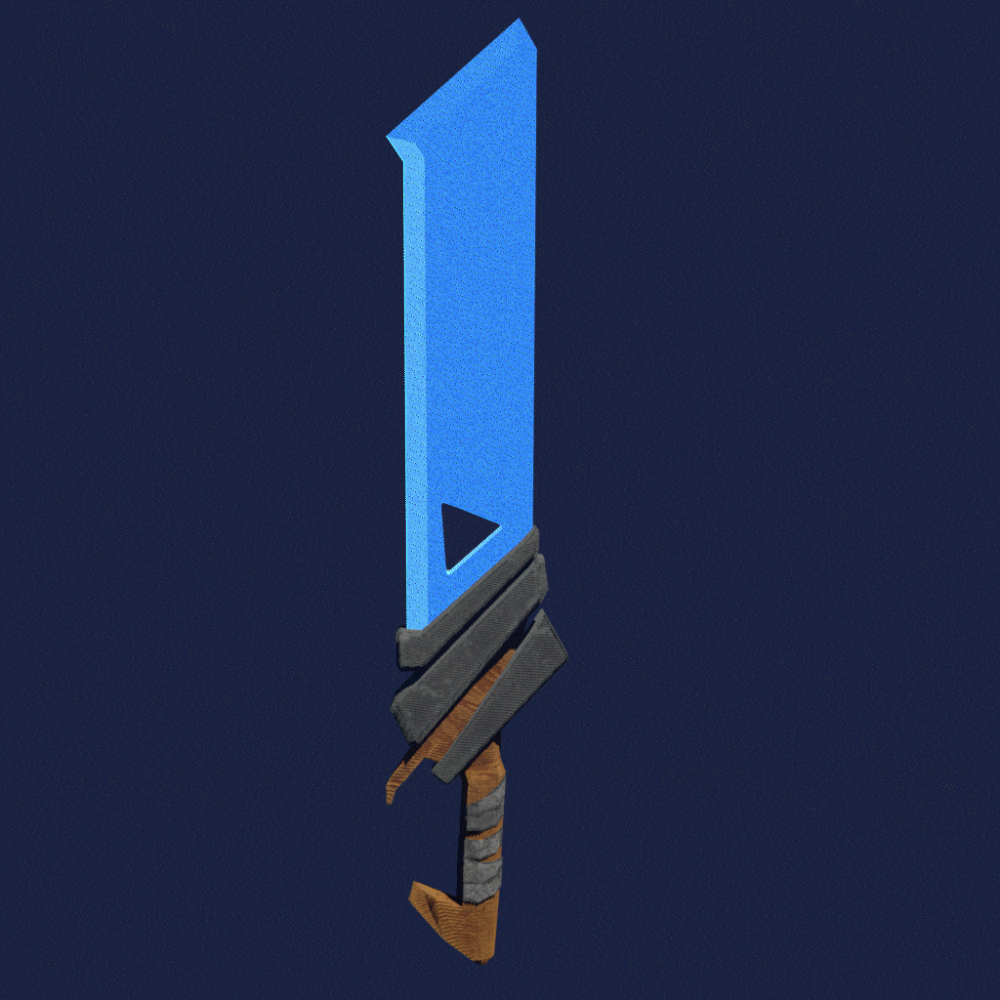
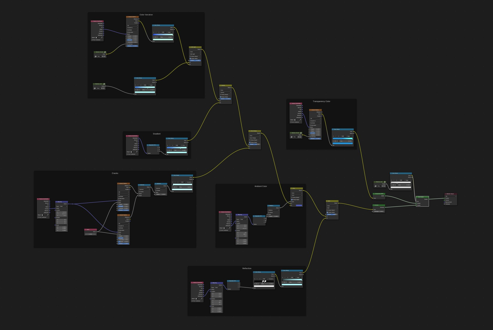

Magic Crystal Sword
A procedural crystal shader in Blender Eevee: emissive glow, layered transparency and arcane patterns.
- Type
- Personal project
- Role
- Modeling, texturing and shader
- Tools
- Blender (Eevee)
- Year
- 2025

Overview
I created this stylized sword to explore a magical crystal shader using Eevee in Blender. The goal was to combine emissive effects, transparency and layered textures to bring out that glowing, arcane energy, all in a real-time renderer.
The blade comes from a procedural node graph, organized in six labeled frames so each layer can be tuned on its own: color variation, gradient, cracks, ambient color, reflection and transparency color. The handle is hand-painted and stylized to contrast with the magical blade.
This was a fun challenge to push my shader creation skills and experiment with real-time VFX elements.
What I did
- Built procedural patterns that simulate arcane energy flowing through crystal.
- Combined an emissive glow with subtle bloom.
- Layered transparency and refraction-like effects to give the blade depth.
- Organized the shader in labeled frames (color variation, gradient, cracks, ambient color, reflection, transparency color) so each layer is easy to tune.
- Hand-painted the stylized handle materials to contrast with the blade.
- Captured the build-up as a layer-by-layer animation and as short videos.
Shader breakdown

Layer by layer
The animation starts from a flat blue base and adds each layer of the shader until the blade becomes the final glowing crystal.
The node graph is organized in six frames: color variation, gradient, cracks, ambient color, reflection and transparency color.
